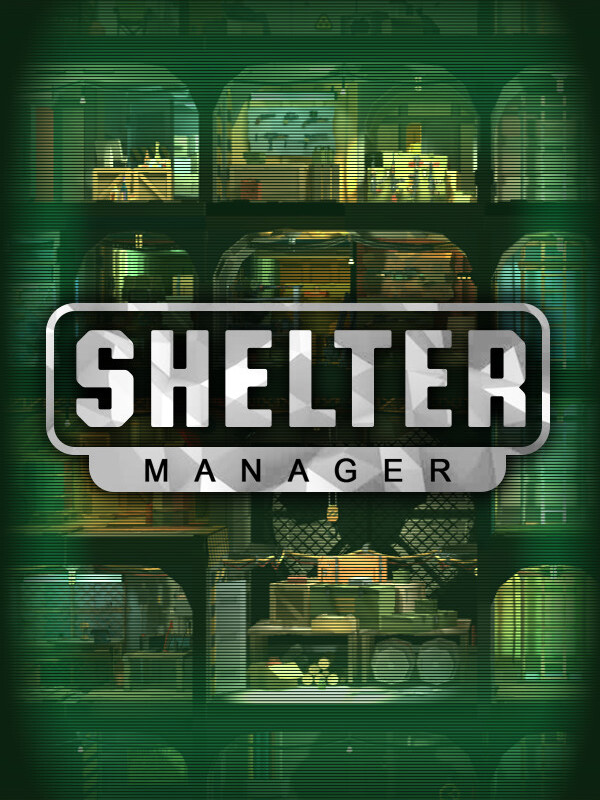

Shelter Manager
Shelter Manager
Details
|  | |
| Spielzeit | Nicht gespielt |
| Letzte Aktivität | Nie |
| Hinzugefügt | 27.04.2022 23:20:04 |
| Modifiziert | 10.11.2022 12:36:39 |
| Fertigstellungsstatus | Not Played |
| Bibliothek | Steam |
| Quelle | Steam |
| Plattform | PC (Windows) |
| Veröffentlichungsdatum | 03.12.2021 |
| Community Bewertungen | 67 |
| Kritiker Punkte | |
| Benutzerwertung | |
| Genre | ⚙️ Strategie Indie Simulation |
| Entwickler | Hamsters Gaming |
| Verleger | Hamsters Gaming |
| Eigenschaft | Single Player |
| Links | Communityhub Diskussionen Guides Neuigkeiten Shopseite PCGamingWiki |
| Tag | |
Beschreibung
By the time the alarm starts ringing in the bunker, you still haven't found out what happened. You can only guess. One thing is certain - the world will never be the same again. There is a whole new reality waiting for you, where the struggle for resources with other survivors will become the main problem. Get to the truth. Find out what happened to the people on the surface.

From a nuclear war to global pandemic or meteorite strike, choose your apocalyptic scenario in an expansive sandbox.

In the campaign mode, you will learn how to survive. Select from a number of missions to learn how to effectively run a bunker!

Construct underground shelters equipped with all the modern amenities to survive the apocalypse. You’ll need a variety of items to survive the harsh world outside. Have your settlers loot and pillage other bunkers to bring home all kinds of essential supplies.

Use precious resources to upgrade the bunker’s rooms to increase the amount of civilians who can live inside. Unlock and expand the bunker with 10 special rooms, each with a key function. The Foodblock, for instance, allows settlers to provide food to the entire settlement whereas the laboratory allows settlers to conduct scientific experiments. Setting up all 14 slots for rooms in your bunker is vital to ensuring your survivors are as safe and efficient as possible.

Monitor morale and productivity, food rationing, electricity, and how many hours of sleep survivors get to increase your shelter’s efficiency and resources. You can control your bunker's wider purpose by switching its focus from ‘working’ to ‘science’.

Form an army that will protect your surface resources from being pillaged by roaming looters. Select from an array of weapons and soldier types, before sending your troops out into hostile territory to attack other bunkers and claim their resources for your own.
Pick Your Apocalypse
From a nuclear war to global pandemic or meteorite strike, choose your apocalyptic scenario in an expansive sandbox.
Learn to Survive
In the campaign mode, you will learn how to survive. Select from a number of missions to learn how to effectively run a bunker!
Build Your Shelter
Construct underground shelters equipped with all the modern amenities to survive the apocalypse. You’ll need a variety of items to survive the harsh world outside. Have your settlers loot and pillage other bunkers to bring home all kinds of essential supplies.
Upgrade Your Facilities
Use precious resources to upgrade the bunker’s rooms to increase the amount of civilians who can live inside. Unlock and expand the bunker with 10 special rooms, each with a key function. The Foodblock, for instance, allows settlers to provide food to the entire settlement whereas the laboratory allows settlers to conduct scientific experiments. Setting up all 14 slots for rooms in your bunker is vital to ensuring your survivors are as safe and efficient as possible.
Manage Your Civilians
Monitor morale and productivity, food rationing, electricity, and how many hours of sleep survivors get to increase your shelter’s efficiency and resources. You can control your bunker's wider purpose by switching its focus from ‘working’ to ‘science’.
Build Your Army
Form an army that will protect your surface resources from being pillaged by roaming looters. Select from an array of weapons and soldier types, before sending your troops out into hostile territory to attack other bunkers and claim their resources for your own.